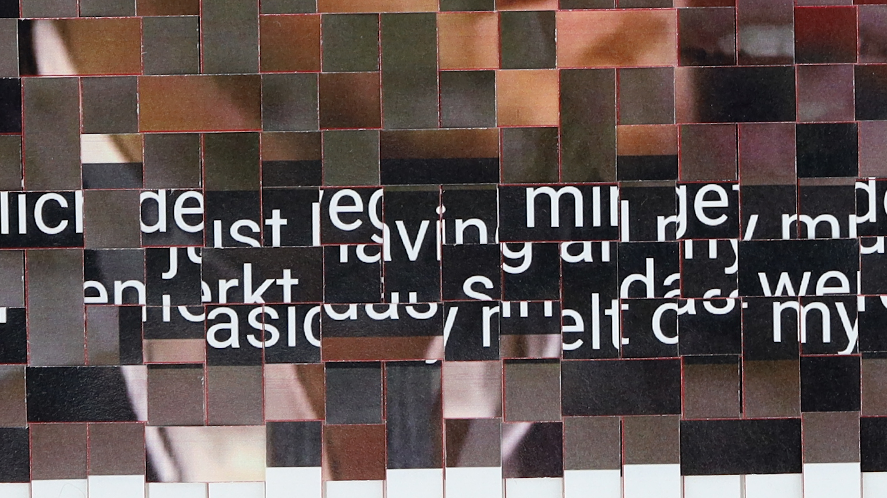
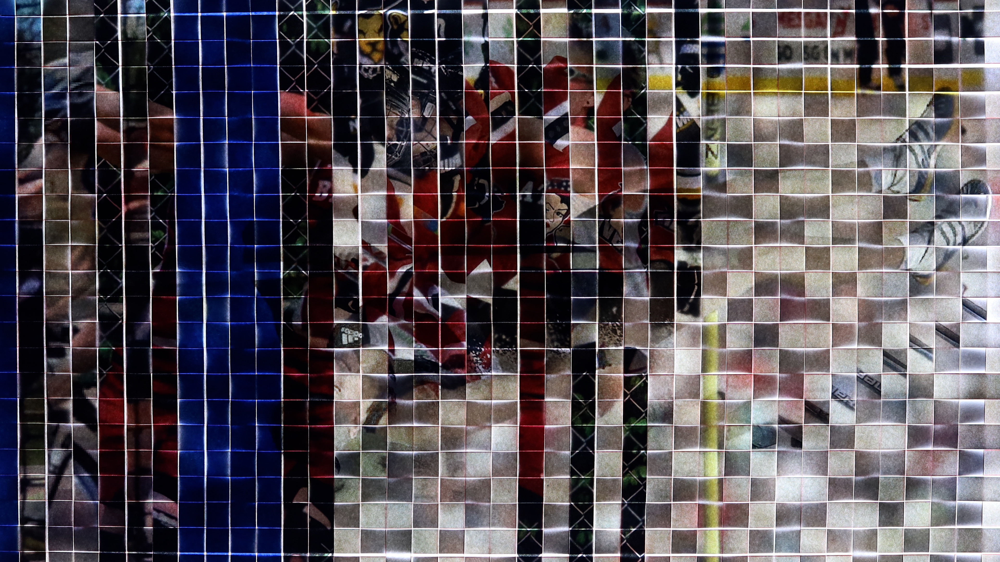

어긋난 관절과 소녀처럼 달리기 Felt out of joint as a girl
단채널 비디오, 2026, 4K, 7분 32초, 컬러/사운드




올림픽과 같은 국가적 무대에서 스포츠 스타는 운동복을 입은 외교관으로서 한 국가의 국력을 드러내며, 이는 단련된 신체로서 가시화된다. 이러한
운동선수들이 트랜지션을 겪을 때, 그들은 신체 훈련과 호르몬 치료를 병행하며 스포츠계 성별 이분법의 범주 안에 들 수 없는 중간적 상태를 경험한다.
〈felt out of joint as a girl〉(2026)은 트랜스젠더 운동선수들이 수행해야 하는 이중적인 삶에서 비롯된 충돌을 다룬다.
작업의 시퀀스를 이루는 모자이크 이미지는 트랜스젠더 운동선수들의 인터뷰 영상과 보도자료 속 선수들의 경기 영상을 캡처한 후,
이를 종이에 인쇄하여 행과 열로 겹쳐 베를 짜듯 엮은 것이다. 모자이크(mosaic)는 유전학에서 유전형질이 뒤섞인 상태를 의미하기도 한다.
작업에서 등장하는 복수의 이미지들은 서로 교차하는 과정에서 모자이크적인 성질을 갖게 되고, 일정 부분의 정보 값이 가려지거나 해체된다. 해체된 이미지에 라이트박스
장치를 사용하여 빛을 투과시킬 때 가려진 부분이 비쳐 드러나며 구체적인 선수의 초상을 형성한다. 이미지는 다시 해체될 수 있는 가능성에 열려 있으며, 이는 매 순간 다른 이미지와 연결될 수 있는 상태이기도 하다.